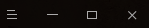
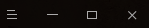

Urwid Introduction for Beginners
Karobben
18 Feb 2020
Urwid is a very powerful TUI lib. The most important thing is it is a Python lib!
Yeah!!! Cheers!!! Let's write a TUI Script with our favorite language, Python!
Urwid proved an elegant Turoiral in the main page
and lot zs of examples at GitHub.
We can write and run hello world, create menus, click buttons,
input text in Editor, ect.. But what if I want to combine all these widgets?
Of course, you can find thorough details from the Manual Page.
And the layout style shows on
the left. It looks awesome, looks cool,
but what does it mean? How can I understand those little boxes and bins? And how can it guide me
to combine all different widgets with ZORE ERROR output? (Technically, it is impossible to
write a script with zore error, zore bug, excepted the "Hello Word" Widget ^ ^). I believe
that I am not the only one who feels confused and exhausted about how to align and juxtapose
different Basic Widgets in Decoration Widgets. So, I tried to understand the codes from
examples line by line. I started with pop_up.py, which has the shortest lines among examples.
Here I learned that I can use Columns to juxtapose two bottons. And then, I moved on bigtext.py,
which has more complicated widgets. This time, I learend that except for the Text, Button, Pile, Filler,
there are Attrrap, Columns, ListBox, Fram, etc.. And now, look at the layout graphic as I
showed before, everything becomes so clear and easy to understand. And soon, I started to try
to build different widgets and combine them together, to form my first TUI App: A Bili_Monitor:
Since it is very important to know the Widgets and it is significant to handle different widgets to create your Script, let's start with the layout style picture here.
Basically, there are two kinds of widgets. One is Basic Widgets (Basic and Graphic Widgets, B. Widgets, for short), which has Text, Edit, Buttons, Divider...
Another is Decoration & Container Widgets(D. Widgets, for short), which can insert one or more B. widgets to a D. widgets. Even more,
you can even juxtapose D. widgets into a D. Widget.
As the picture shows, the first bin is divided into 3 categories with a specific specific specific color.
And this is important for understanding the second bin. For example, The Column has two
colors, blue and pink. Which means, it could insert with B. widgets, like SolidFill, Text.
As for the Padding widget, it could handle all widgets since it has three colors. So, let's look at
specific examples.
1 Clolumns
 Terminal

Terminal

import urwid
button1 = urwid.Button(u'Left')
button2 = urwid.Button(u'Right')
W = urwid.Columns([
urwid.Padding(button1, 'left'),
urwid.Padding(button2, 'right',10),
])
fill = urwid.Filler(W)
loop = urwid.MainLoop(fill)
loop.run()
2 ListBox
Terminal
import urwid
Text = urwid.Text(u'Hello World','center')
button1 = urwid.Button(u'Left')
button2 = urwid.Button(u'Right')
W = urwid.Columns([
urwid.Padding(button1, 'left'),
urwid.Padding(button2, 'right',10),
])
W = urwid.ListBox(urwid.SimpleListWalker([Text,W]))
loop = urwid.MainLoop(W)
loop.run()
To be continue...
For more Chinese information, please go to Yuque Notes